import pandas as pd
import numpy as npOpen food facts dataset: simple analysis
The goal of this project was simply to clean and put the data in the best possible shape for analysis.
The dataset contains food products listing the ingredients and nutritional facts of more than 300’000 foods from over 150 countries in the world.
1. Importing and cleaning the data
List of tasks: - dealing with missing values - standardising entries and text data - bringing text or time entries in a common format - dealing with duplicates or incorrect values - getting certain data in more useful formats
Import packages
Import the data
I opened the file in a text editor and I saw that the informations were separated by a tab. The file is really big so we have to use low_memory=False to open the file in chunks.
Basic informations on the database
The idea of this section was to inspect the database, understand how it is construct, the size etc.
Index(['code', 'url', 'creator', 'created_t', 'created_datetime',
'last_modified_t', 'last_modified_datetime', 'product_name',
'generic_name', 'quantity',
...
'fruits-vegetables-nuts_100g', 'fruits-vegetables-nuts-estimate_100g',
'collagen-meat-protein-ratio_100g', 'cocoa_100g', 'chlorophyl_100g',
'carbon-footprint_100g', 'nutrition-score-fr_100g',
'nutrition-score-uk_100g', 'glycemic-index_100g',
'water-hardness_100g'],
dtype='object', length=163)set_option is very usefull to look at all the elements we want to see. We can then have a great overview of the data and datatype.
| code | url | creator | created_t | created_datetime | ... | carbon-footprint_100g | nutrition-score-fr_100g | nutrition-score-uk_100g | glycemic-index_100g | water-hardness_100g | |
|---|---|---|---|---|---|---|---|---|---|---|---|
| 0 | 0000000003087 | http://world-en.openfoodfacts.org/product/0000... | openfoodfacts-contributors | 1474103866 | 2016-09-17T09:17:46Z | ... | NaN | NaN | NaN | NaN | NaN |
1 rows × 163 columns
Dealing with missing values
Let’s check first how many columns are completely empty. We delete them and check back if it is well done.
code 26
url 26
creator 3
created_t 3
created_datetime 10
last_modified_t 0
last_modified_datetime 0
product_name 17512
generic_name 298313
quantity 236742
packaging 266068
packaging_tags 266068
brands 29050
brands_tags 29070
categories 252728
...
fluoride_100g 355928
selenium_100g 354846
chromium_100g 356004
molybdenum_100g 356007
iodine_100g 355739
caffeine_100g 355936
taurine_100g 355994
ph_100g 355975
fruits-vegetables-nuts_100g 352799
fruits-vegetables-nuts-estimate_100g 355623
collagen-meat-protein-ratio_100g 355845
cocoa_100g 354644
carbon-footprint_100g 355749
nutrition-score-fr_100g 101171
nutrition-score-uk_100g 101171
Length: 147, dtype: int64We can see that many columnns are almost empty. We have to select a threshold to delete columns that do not have enough data. I first use an arbitrary threshold of 50%. I will adjust it later if I think it is not adequate.
code 26
url 26
creator 3
created_t 3
created_datetime 10
last_modified_t 0
last_modified_datetime 0
product_name 17512
brands 29050
brands_tags 29070
countries 275
countries_tags 275
countries_en 275
ingredients_text 72134
serving_size 139406
...
nutrition_grade_fr 101171
states 52
states_tags 52
states_en 52
energy_100g 60660
fat_100g 76530
saturated-fat_100g 92204
carbohydrates_100g 76807
sugars_100g 76841
fiber_100g 135344
proteins_100g 61866
salt_100g 66288
sodium_100g 66333
nutrition-score-fr_100g 101171
nutrition-score-uk_100g 101171
Length: 34, dtype: int64We went from 147 columns to 34 columns with this threshold. We can see that we still have many interesting columnns such as the brands, countries, ingredients and the main nutritional variables. And even if we still have columns with a lot of missing values, each of them have more than 200’000 values which I guess is sufficient for the analysis. So this threshold could be great.
Here we drop columns that display the same information in multiple formats. We keep the simplest format.
data.drop(['brands','countries','countries_tags','states','states_tags'],axis=1,inplace=True)
data.shape(356027, 29)We can see that some columns have exactly the same number of missing values. It could be that they have they are the same even if they do not have the same name. For example, let’s check if nutrition_grade_fr, nutrition-score-fr_100g and nutrition-score-uk_100g are the same.
Actually nutrition-grade_fr contains string grades so it was obvious that these columns were not equals.
It is also possible that the scores are linear combinations. In this case we could maybe delete one of them. Let’s check.
data.loc[data['nutrition-score-fr_100g'] != data['nutrition-score-uk_100g'], ['nutrition-score-fr_100g','nutrition-score-uk_100g']].dropna()[0:5]| nutrition-score-fr_100g | nutrition-score-uk_100g | |
|---|---|---|
| 185 | 18.0 | 3.0 |
| 190 | 2.0 | 0.0 |
| 231 | 13.0 | 2.0 |
| 238 | 14.0 | 2.0 |
| 249 | 13.0 | 2.0 |
It is clearly not the case.
We can also check what is behind the columns additives_n and additives, and ingredients_from_palm_oil_n and ingredients_that_may_be_from_palm_oil_n.
| additives_n | additives | |
|---|---|---|
| 0 | NaN | NaN |
| 1 | 0.0 | [ bananas -> en:bananas ] [ vegetable-oil -... |
| 2 | 0.0 | [ peanuts -> en:peanuts ] [ wheat-flour -> ... |
| 3 | 0.0 | [ organic-hazelnuts -> en:organic-hazelnuts ... |
| 4 | 0.0 | [ organic-polenta -> en:organic-polenta ] [... |
We can see that the two columns display two different informations. So we should keep boths columns. However, we will probably have to modify the structure since it looks like a bit messy.
| ingredients_from_palm_oil_n | ingredients_that_may_be_from_palm_oil_n | |
|---|---|---|
| 0 | NaN | NaN |
| 1 | 0.0 | 0.0 |
| 2 | 0.0 | 0.0 |
| 3 | 0.0 | 0.0 |
| 4 | 0.0 | 0.0 |
It looks like these two columns are equal. Let’s check.
data.loc[data['ingredients_from_palm_oil_n'] != data['ingredients_that_may_be_from_palm_oil_n'], ['ingredients_from_palm_oil_n','ingredients_that_may_be_from_palm_oil_n']].dropna()[0:5]| ingredients_from_palm_oil_n | ingredients_that_may_be_from_palm_oil_n | |
|---|---|---|
| 48 | 0.0 | 3.0 |
| 177 | 0.0 | 1.0 |
| 205 | 0.0 | 1.0 |
| 209 | 0.0 | 1.0 |
| 214 | 0.0 | 1.0 |
These columns are different so we can keep it both.
Let’s see one row without missing values to check if everything seems OK.
data.loc[data.isnull().sum(axis=1)==0][0:1] # I will often use this code to remember how my data are displayed. | code | url | creator | created_t | created_datetime | ... | proteins_100g | salt_100g | sodium_100g | nutrition-score-fr_100g | nutrition-score-uk_100g | |
|---|---|---|---|---|---|---|---|---|---|---|---|
| 2 | 0000000004559 | http://world-en.openfoodfacts.org/product/0000... | usda-ndb-import | 1489069957 | 2017-03-09T14:32:37Z | ... | 17.86 | 0.635 | 0.25 | 0.0 | 0.0 |
1 rows × 29 columns
At first glance, everything seems OK except for the columns: - (1) created_t and last_modified_t: the date format is not very intuitive and the same information is disclose in the columns created_datetime and last_modified_datetime. Then I suggest to delete these columns. - (2) serving_size: it could be easier to extract a single column to only have the quantity in grams - (3) additives: since the structure does not look very simple, we should probably modify it
(2)
0 NaN
1 28 g (1 ONZ)
2 28 g (0.25 cup)
3 28 g (0.25 cup)
4 35 g (0.25 cup)
5 52 g (0.5 cup)
6 45 g (0.25 cup)
7 64 g (0.5 cup)
8 40 g (40 g)
9 14 g (1 Tbsp)
Name: serving_size, dtype: objectI want to have a column which indicate the gramms. It could be easier for the analysis to display this column this way.
data['serving_size'] = data['serving_size'].str.split('g', expand=True)[0] # Actually, it would have been more logical to use replace here.
data['serving_size'].head(10)0 NaN
1 28
2 28
3 28
4 35
5 52
6 45
7 64
8 40
9 14
Name: serving_size, dtype: object0 NaN
1 [ bananas -> en:bananas ] [ vegetable-oil -...
2 [ peanuts -> en:peanuts ] [ wheat-flour -> ...
3 [ organic-hazelnuts -> en:organic-hazelnuts ...
4 [ organic-polenta -> en:organic-polenta ] [...
5 [ rolled-oats -> en:rolled-oats ] [ oats ->...
6 [ organic-long-grain-white-rice -> en:organic...
7 [ org-oats -> en:org-oats ] [ oats -> en:oa...
8 [ organic-chocolate-liquor -> en:organic-choc...
9 [ organic-expeller-pressed -> en:organic-expe...
Name: additives, dtype: object' [ bananas -> en:bananas ] [ vegetable-oil -> en:vegetable-oil ] [ oil -> en:oil ] [ coconut-oil -> en:coconut-oil ] [ oil -> en:oil ] [ corn-oil-and-or-palm-oil-sugar -> en:corn-oil-and-or-palm-oil-sugar ] [ oil-and-or-palm-oil-sugar -> en:oil-and-or-palm-oil-sugar ] [ and-or-palm-oil-sugar -> en:and-or-palm-oil-sugar ] [ or-palm-oil-sugar -> en:or-palm-oil-sugar ] [ palm-oil-sugar -> en:palm-oil-sugar ] [ oil-sugar -> en:oil-sugar ] [ sugar -> en:sugar ] [ natural-banana-flavor -> en:natural-banana-flavor ] [ banana-flavor -> en:banana-flavor ] [ flavor -> en:flavor ] 'It seems that we have an original name and a translation in english. I think that keeping the original is enough.
data['additives'] = data['additives'].str.replace('\[','')
data['additives'] = data['additives'].str.replace('\]',',')
data['additives'] = data['additives'].str.replace('->','')
data['additives'] = data['additives'].str.replace('[\w]+:[\w-]+','')
data['additives'] = data['additives'].str.replace(' ,',',')
data['additives'] = data['additives'].str.replace(', ',', ')
data['additives']0 NaN
1 bananas, vegetable-oil, oil, coconut-oil, oi...
2 peanuts, wheat-flour, flour, sugar, rice-flo...
3 organic-hazelnuts, hazelnuts, organic-cashew...
4 organic-polenta, polenta,
5 rolled-oats, oats, grape-concentrate, concen...
6 organic-long-grain-white-rice, long-grain-wh...
7 org-oats, oats, org-hemp-granola, hemp-grano...
8 organic-chocolate-liquor, chocolate-liquor, ...
9 organic-expeller-pressed, expeller-pressed, ...
10 organic-adzuki-beans, adzuki-beans, beans,
11 organic-refined-durum-semolina-wheat-flour, ...
12 roasted-peanuts, peanuts, peanuts, peanut-or...
13 organic-golden-flax-seeds, golden-flax-seeds...
14 organic-dry-roasted-pumpkin-seeds, dry-roast...
...
356012 NaN
356013 NaN
356014 NaN
356015 NaN
356016 NaN
356017 the-vert, the, arome-naturel-bergamote-avec-...
356018 NaN
356019 viande-d-oie, viande-d, viande, graisse-de-c...
356020 NaN
356021 NaN
356022 organic-peppermint, peppermint, organic-lemo...
356023 NaN
356024 NaN
356025 NaN
356026 citric-acid exists -- ok , maltodextri...
Name: additives, Length: 356027, dtype: objectDealing with duplicates
Now that the columns are more or less cleaned, we have to check for duplicates. We first delete duplicated rows. Only two rows were exactly the same.
Duplicated values (corrected)
data.duplicated(subset=['product_name','brands_tags','countries_en','additives_n', 'additives', 'fat_100g','proteins_100g',
'carbohydrates_100g','sugars_100g','carbohydrates_100g','energy_100g','fiber_100g','sodium_100g',
'nutrition_grade_fr']).sum()18281Correction: Incorrect values
| count | mean | std | min | 25% | 50% | 75% | max | |
|---|---|---|---|---|---|---|---|---|
| additives_n | 279400.0 | 1.883336 | 2.506148e+00 | 0.00 | 0.00000 | 1.00000 | 3.00000 | 3.000000e+01 |
| ingredients_from_palm_oil_n | 279400.0 | 0.023733 | 1.540627e-01 | 0.00 | 0.00000 | 0.00000 | 0.00000 | 2.000000e+00 |
| ingredients_that_may_be_from_palm_oil_n | 279400.0 | 0.060175 | 2.817863e-01 | 0.00 | 0.00000 | 0.00000 | 0.00000 | 6.000000e+00 |
| energy_100g | 291003.0 | 1125.392223 | 9.359866e+02 | 0.00 | 385.00000 | 1092.00000 | 1674.00000 | 2.311990e+05 |
| fat_100g | 275165.0 | 56948.287011 | 2.986620e+07 | 0.00 | 0.10000 | 5.36000 | 20.00000 | 1.566667e+10 |
| saturated-fat_100g | 260344.0 | 5.093285 | 7.966458e+00 | 0.00 | 0.00000 | 1.79000 | 7.14000 | 5.500000e+02 |
| carbohydrates_100g | 274890.0 | 57024.071743 | 2.988114e+07 | 0.00 | 5.70000 | 20.00000 | 57.58000 | 1.566667e+10 |
| sugars_100g | 275400.0 | 15.654440 | 2.194866e+01 | -17.86 | 1.20000 | 5.41000 | 23.33000 | 3.520000e+03 |
| fiber_100g | 217771.0 | 389486.118953 | 1.817560e+08 | -6.70 | 0.00000 | 1.50000 | 3.60000 | 8.481815e+10 |
| proteins_100g | 289803.0 | 54066.891315 | 2.910215e+07 | -800.00 | 0.80000 | 4.90000 | 10.00000 | 1.566667e+10 |
| salt_100g | 285400.0 | 1.948576 | 1.214554e+02 | 0.00 | 0.06096 | 0.56388 | 1.36144 | 6.431280e+04 |
| sodium_100g | 285356.0 | 0.767272 | 4.782076e+01 | 0.00 | 0.02400 | 0.22200 | 0.53600 | 2.532000e+04 |
| nutrition-score-fr_100g | 251751.0 | 9.179725 | 8.996432e+00 | -15.00 | 1.00000 | 10.00000 | 16.00000 | 4.000000e+01 |
| nutrition-score-uk_100g | 251751.0 | 8.992632 | 9.149331e+00 | -15.00 | 1.00000 | 9.00000 | 16.00000 | 4.000000e+01 |
First of all, we can delete the values greater than 100 and lower than 0 for all the columns “_100g”.
data = data[(data['sugars_100g']<0) == False]
data = data[(data['fiber_100g']<0) == False]
data = data[(data['proteins_100g']<0) == False]
data = data[(data['fat_100g']>100) == False]
data = data[(data['saturated-fat_100g']>100) == False]
data = data[(data['carbohydrates_100g']>100) == False]
data = data[(data['sugars_100g']>100) == False]
data = data[(data['fiber_100g']>100) == False]
data = data[(data['proteins_100g']>100) == False]
data = data[(data['salt_100g']>100) == False]
data = data[(data['sodium_100g']>100) == False]Let’s plot the columns to see the distribution of the data.
import matplotlib.pyplot as plt
%matplotlib inline
cols = data.select_dtypes(include=['float64']).columns
cols = [c for c in cols if c.endswith('_100g')]
fig,axes = plt.subplots(nrows=2,ncols=6,figsize=(18,10))
for col,ax in zip(cols,axes.ravel()):
ax.boxplot(data[data[col].notnull()][col],whis=2)
ax.set_title(col)
plt.tight_layout();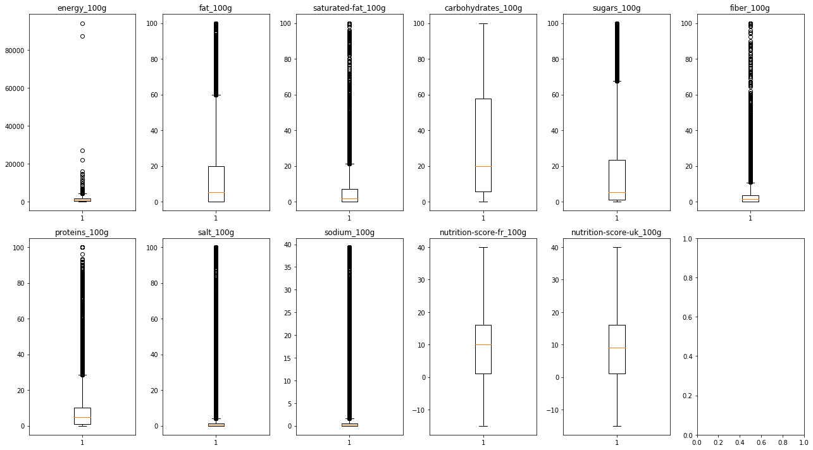
It seems that we still have outliers for the variable “energy_100g”. The unit of this column is kJ. If a value contains only fat (fat has the biggest ratio kJ/g), we will have 3700 kJ (since 1 g of fat = 37 kJ). So the maximum value for the variable “energy_100g” should be around 3700.
| count | mean | std | min | 25% | 50% | 75% | max | |
|---|---|---|---|---|---|---|---|---|
| additives_n | 278578.0 | 1.887881 | 2.507591 | 0.0 | 0.0000 | 1.000000 | 3.00000 | 30.000000 |
| ingredients_from_palm_oil_n | 278578.0 | 0.023785 | 0.154229 | 0.0 | 0.0000 | 0.000000 | 0.00000 | 2.000000 |
| ingredients_that_may_be_from_palm_oil_n | 278578.0 | 0.060292 | 0.282050 | 0.0 | 0.0000 | 0.000000 | 0.00000 | 6.000000 |
| energy_100g | 290040.0 | 1116.545818 | 781.878912 | 0.0 | 385.0000 | 1088.000000 | 1674.00000 | 3700.000000 |
| fat_100g | 274302.0 | 12.576261 | 16.892244 | 0.0 | 0.1000 | 5.300000 | 20.00000 | 100.000000 |
| saturated-fat_100g | 259516.0 | 5.033026 | 7.676326 | 0.0 | 0.0000 | 1.790000 | 7.14000 | 100.000000 |
| carbohydrates_100g | 274049.0 | 31.634179 | 28.926628 | 0.0 | 5.8000 | 20.000000 | 57.69000 | 100.000000 |
| sugars_100g | 274692.0 | 15.662005 | 20.902320 | 0.0 | 1.2500 | 5.450000 | 23.33000 | 100.000000 |
| fiber_100g | 217220.0 | 2.855617 | 4.674337 | 0.0 | 0.0000 | 1.500000 | 3.60000 | 100.000000 |
| proteins_100g | 288874.0 | 7.193215 | 8.250806 | 0.0 | 0.8000 | 5.000000 | 10.00000 | 100.000000 |
| salt_100g | 284476.0 | 1.544124 | 6.080513 | 0.0 | 0.0635 | 0.568960 | 1.36144 | 100.000000 |
| sodium_100g | 284432.0 | 0.608016 | 2.394069 | 0.0 | 0.0250 | 0.224409 | 0.53600 | 39.370079 |
| nutrition-score-fr_100g | 251081.0 | 9.162167 | 8.996656 | -15.0 | 1.0000 | 10.000000 | 16.00000 | 40.000000 |
| nutrition-score-uk_100g | 251081.0 | 8.966995 | 9.144365 | -15.0 | 1.0000 | 9.000000 | 16.00000 | 37.000000 |
2. Manipulating the data
My 3 questions are the following: - (1) What are the countries that produce the most “unhealthy” foods in term of fat and sugar? VS the most healthy? - (2) What does a food with a high nutrient score look like in terms of nutrients? VS a small one? - (3) How are energy, fat, saturated fat, sugar and salt related to the nutrition grade ?
For this question, I would like to have 4 lists: - the top 10 countries that produce products with the most fat - the top 10 countries that produce products with the most sugar - the top 10 countries that produce products with the least fat - the top 10 countries that produce products with the least sugar
Then I want to plot the results and to see if there are countries on both lists (fat and sugar).
##### NOT USEFULL ANYMORE #####
# Let's have a look at the main statistics about these rows.
# data[['fat_100g','sugars_100g']].describe()
# We can see that some products have extreme values. For example, a product has 3520g of sugars per 100g. It should be a mistake.
# I want to delete all the rows that have more than 100g in fat_100g, sugars_100g and fat_100g + sugars_100g. (We could think that deleting the rows for fat_100g + sugars_100g is enough but it is not because of NaN values).
# len(data)
# data = data[((data['fat_100g']+data['sugars_100g'])>100) == False]
# data = data[((data['fat_100g'])>100) == False]
# data = data[((data['sugars_100g'])>100) == False]
# len(data)
# I also want to delete the rows with negative values.
# data = data[(data['fat_100g']<0) == False]
# data = data[(data['sugars_100g']<0) == False]
# len(data)
# data[['fat_100g','sugars_100g']].describe()pd.set_option('display.max_rows', 10)
q1 = data.groupby('countries_en')
q1 = q1.mean()[['fat_100g','sugars_100g']]
q1| fat_100g | sugars_100g | |
|---|---|---|
| countries_en | ||
| Afghanistan | NaN | NaN |
| Albania | 15.0 | 7.0000 |
| Albania,Denmark,Italy | 0.8 | 1.0000 |
| Albania,France | 11.0 | 16.0000 |
| Albania,Italy | 7.6 | 12.1875 |
| ... | ... | ... |
| भारत | 0.0 | NaN |
| ព្រះរាជាណាចក្រកម្ពុជា | 0.0 | 1.3400 |
| 中华人民共和国 | 12.0 | 12.0000 |
| 日本 | NaN | NaN |
| 香港 | 0.0 | 13.6000 |
779 rows × 2 columns
The first problem is that we have sometimes multiples countries in 1 row. How many rows does it represent?
And how many non-missing values has this column?
If this ratio is small, we could simply delete these rows from our dataframe. Let’s compute it.
print('The ratio is equal to:' , round(100*data['countries_en'].str.contains(',').sum()/data['countries_en'].count(),3) , '%')The ratio is equal to: 1.897 %The ratio is very low so we delete the corresponding rows for the analysis. (To be honnest, I also tried to separate each countries and duplicate the row for each one, but I did not find an easy way to achieve that. Do you have any advices?)
We can verify that we do not have anymore this problem.
I translate some country names:
datatest['countries_en'] = datatest['countries_en'].str.replace('香港','Hong Kong')
datatest['countries_en'] = datatest['countries_en'].str.replace('ព្រះរាជាណាចក្រកម្ពុជា','Cambodia')
datatest['countries_en'] = datatest['countries_en'].str.replace('भारत','India')
datatest['countries_en'] = datatest['countries_en'].str.replace('Other-turquie','Turkey')
datatest['countries_en'] = datatest['countries_en'].str.replace('Republique-de-chine','China')
datatest['countries_en'] = datatest['countries_en'].str.replace('Other-japon','Japan')
datatest['countries_en'] = datatest['countries_en'].str.replace('السعودية','Saudi Arabia')
datatest['countries_en'] = datatest['countries_en'].str.replace('fr:Quebec','Canada')
datatest['countries_en'] = datatest['countries_en'].str.replace('French Guiana','France')
datatest['countries_en'] = datatest['countries_en'].str.replace('Réunion','France')
datatest['countries_en'] = datatest['countries_en'].str.replace('Guadeloupe','France')
datatest['countries_en'] = datatest['countries_en'].str.replace('Belgie','Belgium ')I apply a filter that take only the countries with more than 10 products. Otherwise, some countries will be in the top because of a very small number of products.
q1 = datatest.groupby('countries_en')
q1 = q1.count()[(q1.count()['fat_100g']>10) | (q1.count()['sugars_100g']>10) ]
q1.indexIndex(['Argentina', 'Australia', 'Austria', 'Belgium', 'Belgium ', 'Brazil',
'Bulgaria', 'Canada', 'Chile', 'China', 'Colombia', 'Czech Republic',
'Denmark', 'France', 'Germany', 'Greece', 'Hong Kong', 'Hungary',
'India', 'Ireland', 'Italy', 'Japan', 'Luxembourg', 'Madagascar',
'Mexico', 'Netherlands', 'New Zealand', 'Norway', 'Poland', 'Portugal',
'Romania', 'Russia', 'Saint Pierre and Miquelon', 'Saudi Arabia',
'Senegal', 'Serbia', 'South Africa', 'Spain', 'Sweden', 'Switzerland',
'Taiwan', 'Thailand', 'Tunisia', 'Turkey', 'United Kingdom',
'United States'],
dtype='object', name='countries_en')top10_fat_worst = q2[['fat_100g']].sort_values('fat_100g', ascending=False)[0:10].iloc[::-1]
top10_fat_best = q2[['fat_100g']].sort_values('fat_100g', ascending=True)[0:10].iloc[::-1]
top10_sugars_worst = q2[['sugars_100g']].sort_values('sugars_100g', ascending=False)[0:10].iloc[::-1]
top10_sugars_best = q2[['sugars_100g']].sort_values('sugars_100g', ascending=True)[0:10].iloc[::-1]fig = plt.figure(1,figsize=(12,8))
plt.subplot(121)
plt.barh(top10_fat_best.index,top10_fat_best['fat_100g'], color='lightskyblue')
plt.title('Best countries')
plt.xlabel('fat per 100g')
plt.yticks(fontsize=12)
plt.xlim([0, 25])
plt.subplot(122)
plt.barh(top10_fat_worst.index,top10_fat_worst['fat_100g'], color='salmon')
plt.xlabel('fat per 100g')
plt.yticks(fontsize=12)
plt.title('Worst countries')
fig.suptitle('Best and worst countries in terms of "fat products"', fontsize=16);
plt.subplots_adjust(left=None, bottom=None, right=None, top=None, wspace=0.7, hspace=None)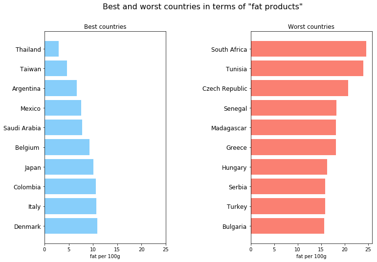
fig = plt.figure(1,figsize=(12,8))
plt.subplot(121)
plt.barh(top10_sugars_best.index,top10_sugars_best['sugars_100g'], color='lightskyblue')
plt.title('Best countries')
plt.xlabel('sugars per 100g')
plt.yticks(fontsize=12)
plt.xlim([0, 60])
plt.subplot(122)
plt.barh(top10_sugars_worst.index,top10_sugars_worst['sugars_100g'], color='salmon')
plt.xlabel('sugars per 100g')
plt.yticks(fontsize=12)
plt.title('Worst countries')
fig.suptitle('Best and worst countries in terms of "sugar products"', fontsize=16);
plt.subplots_adjust(left=None, bottom=None, right=None, top=None, wspace=0.4, hspace=None)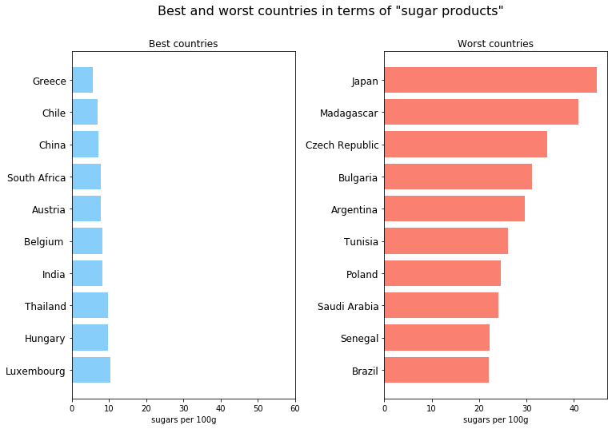
We can see that Belgium and Thailand are in both the best countries in terms of fat and sugar.
{'Bulgaria', 'Czech Republic', 'Madagascar', 'Senegal', 'Tunisia'}We can see that Bulgaria, Czech Republic, Madagascar, Senegal and Tunisia are in both the worst countries in terms of fat and sugar.
For this question, I take the top 100 best and worse ingredients in term of nutrition score. Then I do the average of these ingredients. And finally I do the breakdown of the nutrients.
top_100_best = data.sort_values('nutrition-score-fr_100g')[0:100].mean()[['fat_100g','sugars_100g','proteins_100g']]
top_100_best = top_100_best / (top_100_best[0]+top_100_best[1]+top_100_best[2])
top_100_bestfat_100g 0.083829
sugars_100g 0.156272
proteins_100g 0.759899
dtype: float64top_100_worse = data.sort_values('nutrition-score-fr_100g',ascending=False)[0:100].mean()[['fat_100g','sugars_100g','proteins_100g']]
top_100_worse = top_100_worse / (top_100_worse[0]+top_100_worse[1]+top_100_worse[2])
top_100_worsefat_100g 0.307187
sugars_100g 0.605964
proteins_100g 0.086849
dtype: float64best = pd.DataFrame(top_100_best).T
worse = pd.DataFrame(top_100_worse).T
best = best.append(worse)
best| fat_100g | sugars_100g | proteins_100g | |
|---|---|---|---|
| 0 | 0.083829 | 0.156272 | 0.759899 |
| 0 | 0.307187 | 0.605964 | 0.086849 |
x = ['Best','Worst']
plt.figure(figsize=(7,4))
plt.barh(x,best.fat_100g,edgecolor='black',color='lightblue' , label='fat')
plt.barh(x,best.sugars_100g, left=best.fat_100g, color='lightpink',edgecolor='black',label='sugars')
plt.barh(x,best.proteins_100g, left=best.fat_100g +best.sugars_100g ,edgecolor='black', color='lightgreen',label='proteins')
plt.xlabel('% of nutrients')
plt.ylabel('Best and worse ingredients')
plt.title('Breakdown of the nutrients per class of ingredients')
plt.legend(loc='upper right', bbox_to_anchor=(1.3, 1));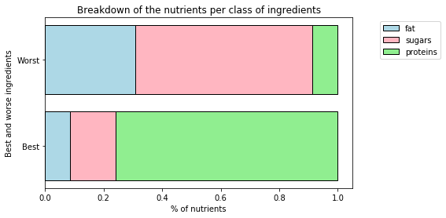
We can see that the best and worst ingredients clearly have a different breakdown in terms of nutrinents. The best ingredients have more proteinns, less sugar and less fat.
For this question, I want to display a graph with the nutrition grades in the x axis and the quantity of energy, fat, satured fat, sugar and salt in the y axis.
aggregated = pd.merge(energy, fat, on='nutrition_grade_fr').merge(saturated_fat,on='nutrition_grade_fr').merge(salt,on='nutrition_grade_fr').merge(sugar,on='nutrition_grade_fr')
aggregated.reset_index(level=0, inplace=True)
aggregated| nutrition_grade_fr | energy_100g | fat_100g | saturated-fat_100g | salt_100g | sugars_100g | |
|---|---|---|---|---|---|---|
| 0 | a | 729.603727 | 2.845037 | 0.444379 | 0.329303 | 3.507345 |
| 1 | b | 519.885317 | 3.909431 | 0.836318 | 0.516587 | 5.183697 |
| 2 | c | 985.000431 | 9.719998 | 2.053514 | 1.687485 | 11.240168 |
| 3 | d | 1459.681200 | 17.555623 | 5.847792 | 1.623642 | 21.040916 |
| 4 | e | 1775.809331 | 26.162110 | 13.367367 | 1.446310 | 26.180903 |
plt.plot(aggregated.nutrition_grade_fr, aggregated.fat_100g)
plt.plot(aggregated.nutrition_grade_fr, aggregated['saturated-fat_100g'])
plt.plot(aggregated.nutrition_grade_fr, aggregated.salt_100g)
plt.plot(aggregated.nutrition_grade_fr, aggregated.sugars_100g)
plt.title('Average number of grams depending of the nutrition grade')
plt.legend(loc='upper right', bbox_to_anchor=(1.5, 1))
plt.xlabel('Nutrition grade')
plt.ylabel('g per 100g');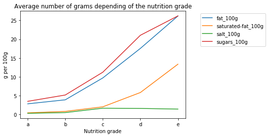
plt.plot(aggregated.nutrition_grade_fr, aggregated.energy_100g)
plt.title('Average number of grams depending of the nutrition grade')
plt.legend(loc='upper right', bbox_to_anchor=(1.4, 1))
plt.xlabel('Nutrition grade')
plt.ylabel('g per 100g');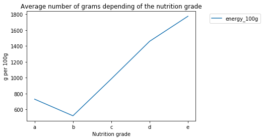
We could normalize each value in order to plot all of the categories in one graph. One idea could be to create an index with the maximum value equal to 100% for each category.
aggregated2 = aggregated
aggregated2['energy_100g'] = aggregated2['energy_100g']/aggregated2['energy_100g'].max()
aggregated2['fat_100g'] = aggregated2['fat_100g']/aggregated2['fat_100g'].max()
aggregated2['saturated-fat_100g'] = aggregated2['saturated-fat_100g']/aggregated2['saturated-fat_100g'].max()
aggregated2['salt_100g'] = aggregated2['salt_100g']/aggregated2['salt_100g'].max()
aggregated2['sugars_100g'] = aggregated2['sugars_100g']/aggregated2['sugars_100g'].max()
aggregated2| nutrition_grade_fr | energy_100g | fat_100g | saturated-fat_100g | salt_100g | sugars_100g | |
|---|---|---|---|---|---|---|
| 0 | a | 0.410857 | 0.108746 | 0.033244 | 0.195144 | 0.133966 |
| 1 | b | 0.292760 | 0.149431 | 0.062564 | 0.306128 | 0.197995 |
| 2 | c | 0.554677 | 0.371530 | 0.153621 | 1.000000 | 0.429327 |
| 3 | d | 0.821981 | 0.671032 | 0.437468 | 0.962167 | 0.803674 |
| 4 | e | 1.000000 | 1.000000 | 1.000000 | 0.857080 | 1.000000 |
plt.plot(aggregated2.nutrition_grade_fr, aggregated2.fat_100g)
plt.plot(aggregated2.nutrition_grade_fr, aggregated2['saturated-fat_100g'])
plt.plot(aggregated2.nutrition_grade_fr, aggregated2.salt_100g)
plt.plot(aggregated2.nutrition_grade_fr, aggregated2.sugars_100g)
plt.plot(aggregated2.nutrition_grade_fr, aggregated2.energy_100g)
plt.title('Evolution of the number of grams depending of the nutrition grade')
plt.legend(loc='upper right', bbox_to_anchor=(1.5, 1))
plt.xlabel('Nutrition grade')
plt.ylabel('Index');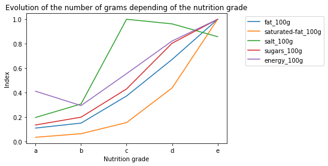
We can see that for each chosen category, the number of grams increase when the nutrition decrease. The results were expected since I have chosen categories such as sugars and fat.
3. Text data
Goal: find the five most common ingredients.
The question is not explicit wether we should consider the raw ingredients or not. I made the choice not to include them in the analysis. By raw ingredients, I mean what is inside the brackets. For example, if I look at the first line, I will only include vegetable oil, and not coconut or corn oil.
I first explore the data to see what changes should be made.
0 NaN
1 Bananas, vegetable oil (coconut oil, corn oil ...
2 Peanuts, wheat flour, sugar, rice flour, tapio...
3 Organic hazelnuts, organic cashews, organic wa...
4 Organic polenta
Name: ingredients_text, dtype: objectWe should put everything in lower case.
'bananas, vegetable oil (coconut oil, corn oil and/or palm oil) sugar, natural banana flavor.'We can see that there are raw ingredients in brackets. I should delete what is inside the ().
'organic hazelnuts, organic cashews, organic walnuts almonds, organic sunflower oil, sea salt.'We should also delete “organic”, “org”, “Organic” and “Org” since it does not change the ingredient itself.
We should also delete special characters at the end of the row.
We could finally delete the space to be sure that all ingredients are formatted the same way.
Now that the column is more or less cleaned, the remaining problem is the separated commas. We have to separated each ingredients from the commas.
| 0 | 1 | 2 | 3 | 4 | ... | 113 | 114 | 115 | 116 | 117 | |
|---|---|---|---|---|---|---|---|---|---|---|---|
| 1 | bananas | vegetable oil sugar | natural banana flavor | None | None | ... | None | None | None | None | None |
| 2 | peanuts | wheat flour | sugar | rice flour | tapioca starch | ... | None | None | None | None | None |
| 3 | hazelnuts | cashews | walnuts almonds | sunflower oil | sea salt | ... | None | None | None | None | None |
3 rows × 118 columns
I want to put every columns into a single one in order to count the number of ingredients.
| 0 | |
|---|---|
| salt | 65121 |
| sugar | 57315 |
| water | 51081 |
| sel | 35013 |
| sucre | 28276 |
| ... | ... |
| garlic | 9341 |
| 9082 | |
| soy lecithin | 8815 |
| xanthan gum | 8395 |
| maltodextrin | 8171 |
20 rows × 1 columns
- The first thing we see is that words are in different languages. So we have to translate the most important words until translation has no effect on the top 5.
- ‘natural flavor’ and ‘natural flavors’ should be the same. We will simply replace ‘natural flavors’ by ‘natural flavor’.
- We can also notice that there are 9139 ’ ’. This is due to the fact that we replaced what was inside the brackets. For example, the following row has no direct raw ingredients. Our code will simply delete this row.
Comment: - Many arbitrary choices are made. For example, I decided not to include ‘sea salt’ in the category ‘salt’. - Many other changes could be made. However, only the top 5 ingredients are asked. These changes would normally not change the composition and the order of the top 5.
'(panko breadcrumbs [bleached wheat flour, yeast, sugar, salt], kosher salt [salt, yellow prussiate of soda {anti-caking agent}], white pepper).'lst = lst.str.replace('sel','salt')
lst = lst.str.replace('sal','salt')
lst = lst.str.replace('sucre','sugar')
lst = lst.str.replace('eau','water')
lst = lst.str.replace('arôme naturel','natural flavor')
lst = lst.str.replace('arômes naturels','natural flavor')
lst = lst.str.replace('acidifiant acide citrique','citric acid')4. Time-series analysis
Goal: - (1) mean time difference between ‘created_datetime’ and ‘last_modified_datetime’ - (2) analyze the total number of items created each month over the full timeline of the data
created_datetime 2016-09-17T09:17:46Z
last_modified_datetime 2016-09-17T09:18:13Z
Name: 0, dtype: objectWe want a timestamp format instead of the string format.
When I first tried to convert the data, I had an error and I discovered that some values were not datetime. I had to find and delete all the rows that are not usefull for the analysis.
data.created_datetime[data.created_datetime.str.contains('^(?!\d{4}-\d{2}-\d{2}T\d{2}:\d{2}:\d{2}Z)', na=False)]193944 Dia,Sogeres
193960 Super U
193993 Carrefour
194003 Auchan
194055 Banque alimentaire,Carrefour,Leclerc,E.Leclerc
...
194104 Banque alimentaire
194111 Leclerc
194114 Auchan,Super U
194255 Auchan,Super U
194311 Simply-Market
Name: created_datetime, Length: 13, dtype: object| code | url | creator | created_datetime | last_modified_datetime | ... | salt_100g | sodium_100g | nutrition-score-fr_100g | nutrition-score-uk_100g | difference_datetime | |
|---|---|---|---|---|---|---|---|---|---|---|---|
| 0 | 0000000003087 | http://world-en.openfoodfacts.org/product/0000... | openfoodfacts-contributors | 2016-09-17 09:17:46+00:00 | 2016-09-17 09:18:13+00:00 | ... | NaN | NaN | NaN | NaN | 00:00:27 |
1 rows × 28 columns
Timedelta('111 days 18:33:43.887901')count_m = data.created_datetime.dt.month_name()
grouped = count_m.groupby(count_m).size()
grouped.sort_values(ascending =False)created_datetime
March 182260
February 26554
April 19044
May 15720
August 15087
...
July 12607
January 10502
October 8966
November 8811
December 8624
Name: created_datetime, Length: 12, dtype: int64plt.figure(figsize=(13,8))
plt.xlabel('Months')
plt.ylabel('Number of items created')
plt.title('Number of items created per months',fontsize=20)
months = ['January','February','March','April','May','June','July','August','September','October','November','December']
plt.bar(months,grouped.reindex(months));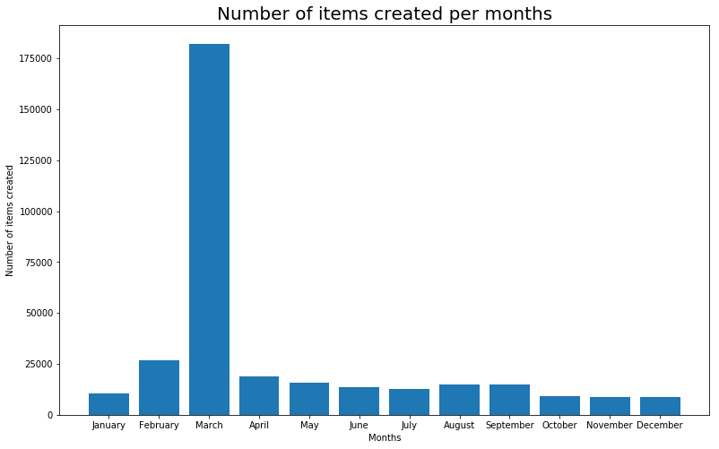
You told us not to use too many pie charts but I think it is great in this case. What do you think?
colormap= ['lightpink','violet' ,'slateblue' ,'lightsteelblue' ,'paleturquoise' ,'lightgreen' ,'gold' ,'orange' ,
'chocolate' ,'tomato' ,'rosybrown' ,'grey' ]
plt.figure(figsize=(6,6))
plt.title('Number of items created per months',fontsize=20)
plt.pie(grouped.reindex(months), labels=months, explode=(0.1,0.1,0.1,0.1,0.1,0.1,0.1,0.1,0.1,0.1,0.1,0.1),colors=colormap);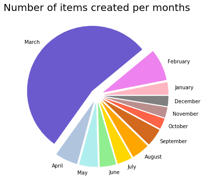
5. Build a database
List of tasks: - restrict your data to 1000 entries and 5 columns of your choice - create a connection to a sqlite3 database - create one or multiple tables, at least one of the tables should have a PRIMARY KEY - fill the database with your data - run at least one query to demonstrate that it works correctly
test = data.loc[0:999,['code','url','created_t','countries_en','fat_100g']]
test.loc['id_pk'] = pd.Series(range(1,1001))
test.head(3)| code | url | created_t | countries_en | fat_100g | |
|---|---|---|---|---|---|
| 0 | 0000000003087 | http://world-en.openfoodfacts.org/product/0000... | NaN | France | NaN |
| 1 | 0000000004530 | http://world-en.openfoodfacts.org/product/0000... | NaN | United States | 28.57 |
| 2 | 0000000004559 | http://world-en.openfoodfacts.org/product/0000... | NaN | United States | 17.86 |
I first tried to use ‘code’ as a Primary Key. However, whem the dataframe is converted into a database, the 0 are not well converted (since it is considered as an Integer). Maybe I should have put a string format for the conversion. What do you think about it? Then I decided to create a special column as a primary key. I find it easier like this.
Example of a query:
| Countries | Average fat per 100g | |
|---|---|---|
| 0 | Belgium,France,Netherlands,United Kingdom | 17.050000 |
| 1 | United States | 14.995224 |
| 2 | United Kingdom | 14.500000 |
| 3 | France,United Kingdom | 13.692857 |
| 4 | France | 13.312069 |
| ... | ... | ... |
| 17 | Guadeloupe | NaN |
| 18 | Dominican Republic | NaN |
| 19 | Bangladesh | NaN |
| 20 | Australia | NaN |
| 21 | None | NaN |
22 rows × 2 columns
Everything seems to work perfectly.
6. Finding correlations (corrected)
Goals: - (1) identify the variables which most affect the nutritional score - (2) provide some insight into which factors cause both a low or a high nutritional score
- In order to identify what variable most affect the nutritional score, we need to find the ones that have a correlation closer to 1 in absolute.
| code | url | creator | created_datetime | last_modified_datetime | ... | salt_100g | sodium_100g | nutrition-score-fr_100g | nutrition-score-uk_100g | difference_datetime | |
|---|---|---|---|---|---|---|---|---|---|---|---|
| 2 | 0000000004559 | http://world-en.openfoodfacts.org/product/0000... | usda-ndb-import | 2017-03-09 14:32:37+00:00 | 2017-03-09 14:32:37+00:00 | ... | 0.635 | 0.25 | 0.0 | 0.0 | 0 days |
1 rows × 28 columns
The variables that I can use for the correlation are: - ‘additives_n’, - ‘ingredients_from_palm_oil_n’, - ‘ingredients_that_may_be_from_palm_oil_n’, - ‘energy_100g’, - ‘fat_100g’, - ‘saturated-fat_100g’, - ‘carbohydrates_100g’, - ‘sugars_100g’, - ‘fiber_100g’, - ‘proteins_100g’, - ‘salt_100g’, - ‘sodium_100g’, - ‘nutrition-score-fr_100g’, - ‘nutrition-score-uk_100g’, - ‘difference_datetime’
In order to use difference_datetime, we have to change the format into a total of seconds. It would most probably have no correlation but who knows?
We can use the method .corr to have the correlation matrix.
| additives_n | ingredients_from_palm_oil_n | ingredients_that_may_be_from_palm_oil_n | energy_100g | fat_100g | ... | salt_100g | sodium_100g | nutrition-score-fr_100g | nutrition-score-uk_100g | difference_datetime | |
|---|---|---|---|---|---|---|---|---|---|---|---|
| additives_n | 1.000000 | 0.131039 | 0.297396 | 0.003482 | -0.103318 | ... | -0.015726 | -0.015729 | 0.166314 | 0.164708 | -0.033052 |
| ingredients_from_palm_oil_n | 0.131039 | 1.000000 | 0.182165 | 0.114803 | 0.067717 | ... | -0.004833 | -0.004819 | 0.131132 | 0.134814 | 0.089705 |
| ingredients_that_may_be_from_palm_oil_n | 0.297396 | 0.182165 | 1.000000 | 0.030687 | 0.020933 | ... | -0.019890 | -0.019893 | 0.061556 | 0.063944 | 0.094433 |
| energy_100g | 0.003482 | 0.114803 | 0.030687 | 1.000000 | 0.772522 | ... | -0.077832 | -0.077860 | 0.623124 | 0.660094 | -0.009541 |
| fat_100g | -0.103318 | 0.067717 | 0.020933 | 0.772522 | 1.000000 | ... | -0.045582 | -0.045599 | 0.565134 | 0.602282 | 0.005961 |
| ... | ... | ... | ... | ... | ... | ... | ... | ... | ... | ... | ... |
| salt_100g | -0.015726 | -0.004833 | -0.019890 | -0.077832 | -0.045582 | ... | 1.000000 | 1.000000 | 0.122403 | 0.128739 | -0.015433 |
| sodium_100g | -0.015729 | -0.004819 | -0.019893 | -0.077860 | -0.045599 | ... | 1.000000 | 1.000000 | 0.122404 | 0.128740 | -0.015430 |
| nutrition-score-fr_100g | 0.166314 | 0.131132 | 0.061556 | 0.623124 | 0.565134 | ... | 0.122403 | 0.122404 | 1.000000 | 0.978836 | -0.037340 |
| nutrition-score-uk_100g | 0.164708 | 0.134814 | 0.063944 | 0.660094 | 0.602282 | ... | 0.128739 | 0.128740 | 0.978836 | 1.000000 | -0.045776 |
| difference_datetime | -0.033052 | 0.089705 | 0.094433 | -0.009541 | 0.005961 | ... | -0.015433 | -0.015430 | -0.037340 | -0.045776 | 1.000000 |
15 rows × 15 columns
pd.set_option('display.max_rows', 15)
data.corr()[['nutrition-score-fr_100g']].sort_values('nutrition-score-fr_100g',ascending=False)| nutrition-score-fr_100g | |
|---|---|
| nutrition-score-fr_100g | 1.000000 |
| nutrition-score-uk_100g | 0.978836 |
| saturated-fat_100g | 0.632853 |
| energy_100g | 0.623124 |
| fat_100g | 0.565134 |
| sugars_100g | 0.464061 |
| carbohydrates_100g | 0.256162 |
| additives_n | 0.166314 |
| ingredients_from_palm_oil_n | 0.131132 |
| sodium_100g | 0.122404 |
| salt_100g | 0.122403 |
| proteins_100g | 0.101319 |
| ingredients_that_may_be_from_palm_oil_n | 0.061556 |
| difference_datetime | -0.037340 |
| fiber_100g | -0.147743 |
| nutrition-score-uk_100g | |
|---|---|
| nutrition-score-uk_100g | 1.000000 |
| nutrition-score-fr_100g | 0.978836 |
| energy_100g | 0.660094 |
| saturated-fat_100g | 0.657371 |
| fat_100g | 0.602282 |
| sugars_100g | 0.451992 |
| carbohydrates_100g | 0.260655 |
| additives_n | 0.164708 |
| ingredients_from_palm_oil_n | 0.134814 |
| proteins_100g | 0.133726 |
| sodium_100g | 0.128740 |
| salt_100g | 0.128739 |
| ingredients_that_may_be_from_palm_oil_n | 0.063944 |
| difference_datetime | -0.045776 |
| fiber_100g | -0.137499 |
The variables that most affect the nutrition score are the ones with a correlation close to 1 in absolute. That is to say, saturated-fat_100g, fat_100g, energy_100g and sugars_100g. In our case, all variables that impact the most the nutrition score have a positive correlation.
The variables linked positively to the nutrition scores are the ones in answer 1: saturated-fat_100g, fat_100g, energy_100g and sugars_100g. The variables linked negatively are fiber_100g, difference_datetime. However, the correlation are really close to 0. So the relation is really insignificant.
We could also display a graphic to see that.
label_c =['additives_n','ingredients_from_palm_oil_n', 'ingredients_that_may_be_from_palm_oil_n', 'energy_100g', 'fat_100g', 'saturated-fat_100g', 'carbohydrates_100g', 'sugars_100g', 'fiber_100g', 'proteins_100g', 'salt_100g', 'sodium_100g', 'nutrition-score-fr_100g','nutrition-score-uk_100g', 'difference_datetime']
f = plt.figure(figsize=(17, 13))
plt.matshow(data.corr(), fignum=f.number)
plt.xticks(range(len(label_c)), label_c, fontsize=14, rotation=80)
plt.yticks(range(len(label_c)), label_c, fontsize=14)
cb = plt.colorbar()
cb.ax.tick_params(labelsize=14)
plt.title('Correlation Matrix', fontsize=16, y=1.4);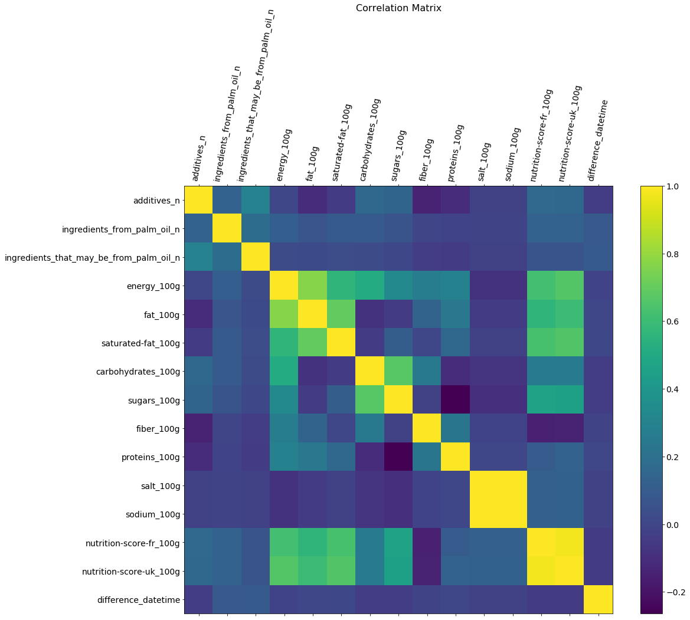
I still have a huge amount of datapoints, so I use an alpha very small.
num_cols = data.select_dtypes(include=['float','int']).columns
fig,axes = plt.subplots(nrows=4,ncols=4,figsize=(18,4*4))
for col,ax in zip(num_cols,axes.ravel()):
temp = data[data[col].notnull()]
ax.scatter(temp[col],temp['nutrition-score-fr_100g'],alpha=0.1)
ax.set_title(col)
axes[3,3].axis('off');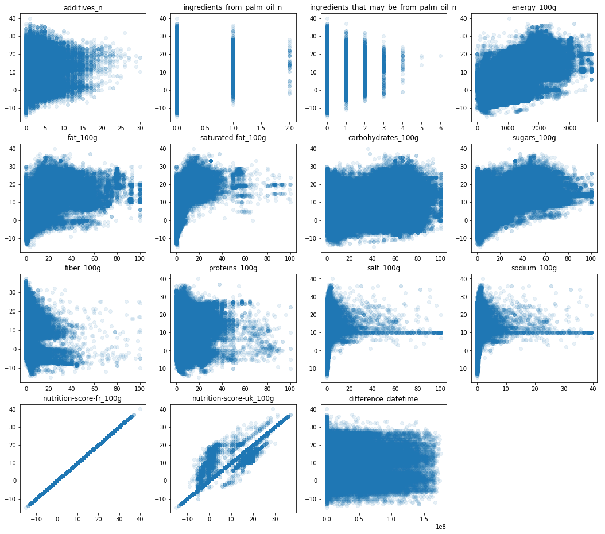
We can in fact see a positive trend between the nutrition score and the columnns energy_100g, fat_100g, saturated-fat_100g and sugars_100g.